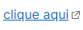
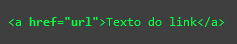
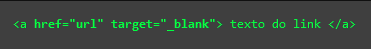
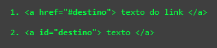

O termo hiperlink foi criado por Ted Nelson em 1965 e alguns anos depois, em 1968, foi implementado o primeiro modelo desta tecnologia dentro de um único documento.
Ted Nelson
O que é o Hiperlink?
Um hiperlink consiste em correlacionar um URL a uma palavra ou texto, assim, o clique do usuário o redireciona para uma nova página ou documento que foi referenciado.

Tipos de Hiperlinks
Interno
Um link entre duas páginas da web, em que ambas as páginas pertencem ao mesmo site, é chamado de link interno.
Externo
Um link de sua página da web para a página de outra pessoa. Sem links externos, não há Web, pois a Web é uma rede de páginas da web. Use links externos para fornecer informações além do conteúdo disponível em sua página da web.
Âncora
Âncoras amarraram duas seções de um documento. Quando você segue um link que aponta para uma âncora, seu navegador salta para outra parte do documento atual em vez de carregar um novo documento.
Sintaxes
Sintaxe simples de hiperlink:

O atributo href especifica o destino de um link.
O " texto do link " pode ser uma palavra, frase, texto, imagem ou qualquer outro elemento de HTML.
Sintaxe com atributo target:

O atributo target especifica onde abrir o documento vinculado.
Sintaxe para âncora:

A primeira sintaxe indica de onde você vai sair.
A segunda sintaxe é colocada aonde você quer chegar.